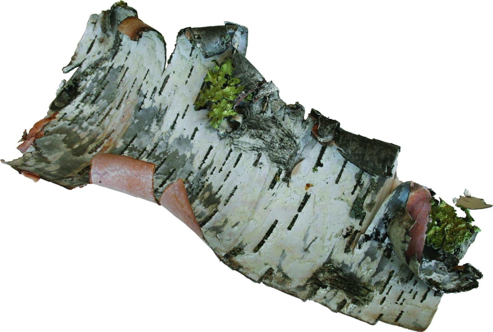
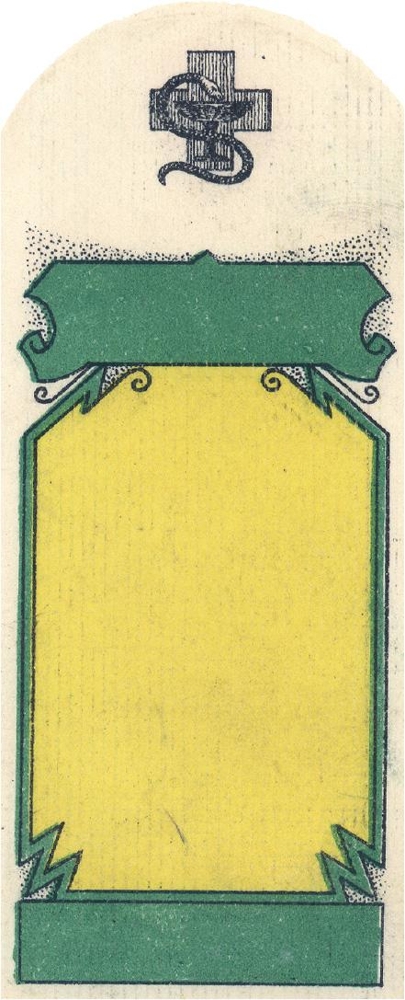
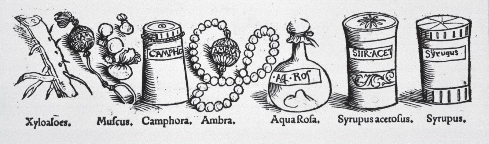
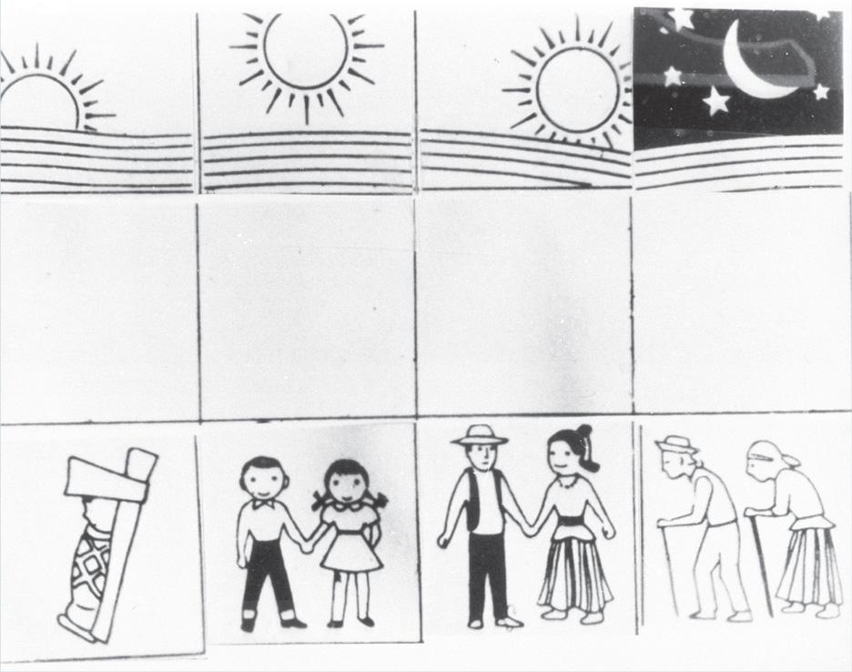
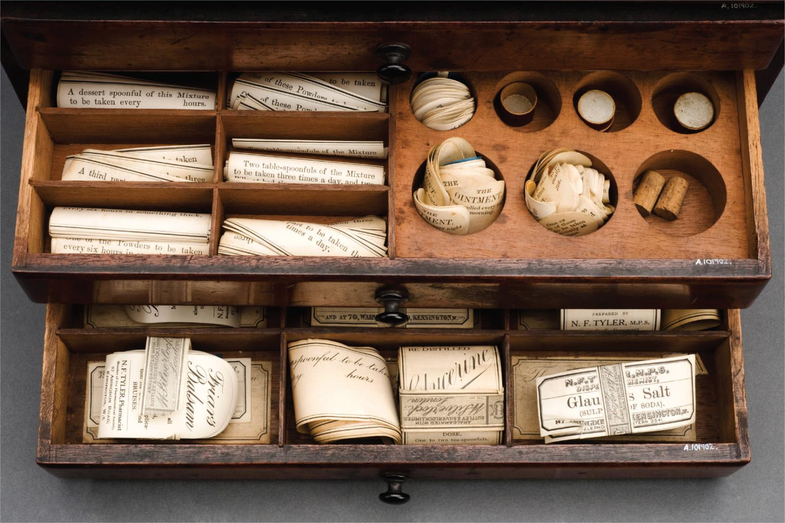

6.1 Historical Introduction
During numerous excavations in the Middle East and Far East, archaeologists have uncovered the precursors to modern-day prescriptions recorded on a variety of objects (clay tablets, papyrus, silk, and birch bark leaves) and in seemingly odd places (on a sarcophagus and on grotto walls). These ancient records followed a recipe-like format, typically listing many ingredients drawn from nature, including flowers, herbs, tree resins and fruits, minerals, and animal parts. The compounded remedies combined these substances to address specific symptoms of an illness or a disease. The amount of each ingredient was often tailored to a patient’s gender and age, and some early prescriptions varied according to the annual growth cycles of their natural ingredients. To treat the illnesses and relieve the suffering of early citizens, ancient healers straddled the realms of the practical and magical, coupling their limited knowledge of human anatomy and physiology with their beliefs in the healing powers of nature and the human spirit.
Ancient Prescriptions and Herbal Medicines
One of the earliest known records of medical prescriptions was discovered by archaeologists in Mesopotamia and dates back to around 3000 BCE. The artifact does not specify ingredient quantities, nor the illnesses or diseases being addressed, but it does contain a series of more than 15 prescriptions written in cuneiform on a Sumerian clay tablet, as shown. Cuneiform is an ancient type of writing common to many early cultures. It began as a series of pictographs but, over time, the communication transformed into a series of specific characters with meanings. To record cuneiform characters, ancient scribes used a stylus, or a sharp-ended reed, to carve wedge-shaped impressions into a wet clay tablet. Following is a translation of one of the prescriptions on the Sumerian clay tablet:
Sift and knead together, all in one turtle-shell, the sprouting naga plant and mustard; wash the sick spot with quality [fermented barley] and hot water; scrub the sick spot with all of the kneaded mixture; after scrubbing, rub with vegetable oil and cover with pulverized fir.
Other ancient prescriptions from around 1534 BCE were recorded on papyrus and buried in Egyptian tombs. The most well-known document of ancient Egyptian pharmacology is the 110-page Ebers Papyrus, supposedly discovered buried between the legs of a mummy. The Ebers Papyrus contains more than 700 prescriptions for ailments that commonly affected early Egyptian cultures: ophthalmic conditions from the dry and sandy environment, gastrointestinal parasites from drinking and bathing in unclean water, and insect-borne diseases such as malaria and trachoma. Egyptians believed in the curative powers of plants, and at least one-third of the plants referenced in their prescriptions (such as the aloe plant to treat burns) are still part of modern pharmacopeia.
In the Far East, archaeologists found early prescriptions in the Han tombs at Mawangdui, which date back to the Western Han dynasty (206 BCE to 25 CE). Of particular significance was the discovery, in Tomb No. 3, of a silk scroll titled Wu Shi Er Bing Fang, or Prescriptions for Fifty-Two Diseases. This document lists 283 prescriptions for treating the 52 noted conditions or diseases, with skin ulcers, urinary problems, and hernias being most frequently addressed. More than 240 herbal drug remedies are included on this silk document, and traditional Eastern medicine still relies on many of them as treatments.
Early prescriptions were also discovered on the walls of the Longmen Grottos in Luoyang, China. Buddhists occupied these grottos during the Northern Wei dynasty (386 to 534 CE). The entrance walls of one grotto in particular—dubbed the “Medical Prescription Cave”—are carved with 140 remedies for various ailments.
By the 4th and 5th centuries CE, medical practice became more formalized, as evidenced by the Bower Manuscript. Discovered during an excavation in a remote region of China, the manuscript was written on birch bark and lists 1,120 illnesses plus 760 herbal medicines for treating them. The Bower Manuscript’s author, the East Indian shaman Sushruta, divided the body into three parts—the spirit, the phlegm, and the bile—laying the foundation for ayurvedic medicine, a holistic approach to healing that is still practiced today.

Greek and Roman Influences on Medicine
During this same period in Greece, medical practice began to shift from a spiritual-based approach to a more scientific, logic-based approach. The Greek physician Hippocrates, now known as “The Father of Modern Medicine,” played a significant role in this movement. Hippocrates published more than 70 medical texts, categorizing diseases, symptoms, physical findings, and treatments. Hippocrates also developed the diagnostic concept of the four humors (blood, phlegm, yellow bile, and black bile) within the body, claiming that all four humors must be in the right balance to maintain optimal health. His hypothesis formed the beginnings of traditional Western medicine.
With the rise of the Roman Empire, medical practices grew more formalized and specialized. Many Greek physicians who were Roman prisoners of war during this time agreed to set up medical practices within the Roman Empire in exchange for their freedom. Their practices, based on the knowledge of anatomy and physiology and of diseases and associated herbal remedies that they had learned in their homeland, brought Greek medical insights into the Roman Empire.
The Roman healthcare practitioners, known as medici, had many roles—including those of physician, surgeon, pharmacist, and herbalist—and recognized the particular importance of public health and hygiene practices. Many medici became adept at surgical procedures by tending to the battle wounds of Roman soldiers.
The influence of these early Greek and Roman medical practitioners is evident in today’s medical vocabulary. Specialized medical terms and abbreviations stem from the Greek and Latin languages spoken by ancient practitioners. In fact, as Latin spread across Europe in the Middle Ages, communication among healthcare practitioners became standardized, and simple written labels often were affixed to ordinary glass or ceramic containers of herbal medicines.

Prior to the Middle Ages, a physician was responsible for all three patient-treatment phases: diagnosing a patient’s condition, preparing a remedy, and administering that remedy. However, with the emergence of medieval apothecaries—merchants who compounded and dispensed spices, herbs, and other cures from their storefronts—a physician was able to focus more on patient care, working collaboratively with an apothecary to prepare and label necessary medications. Once Latin became commonly spoken across the European continent, physicians used it to communicate with the apothecary and the patient. Consequently, the early prototype of today’s handwritten prescription can be traced to its Latin roots.

Origins and Evolution of the Rx Symbol and the Signa
The word prescription comes from the Latin word praescriptus, with the prefix pre meaning “before” and the root word script meaning “written.” Thus, the word prescription means “to write before,” meaning that an order must be written down before a medication is prepared.
The prescription symbol—the Rx symbol—also has its roots in Latin. The symbol comes from the Latin word recipere, meaning “to take,” and first appeared in the medieval manuscripts of the Roman Empire. Some theories claim that the symbol was derived from the Eye of Horus, an ancient Egyptian symbol for protection and good health. Other theories state that the Rx symbol evolved from the ancient symbol for the Roman god Jupiter, upon whom early inhabitants called for protection from illness and disease. The written symbols for both the Eye of Horus and the god Jupiter bear a resemblance to the Rx symbol. Today, the Rx symbol continues to be printed on written prescriptions, implying that the patient must “take thus.”
Ancient Greek and Roman cultures not only established the foundations for traditional Western medicine and influenced the medical terminology and pharmacy abbreviations central to health care today but also devised the part of a prescription called the signa, often referred to as the sig in medical documents. The term signa comes from the Latin verb signare, meaning “to mark, write, or indicate.” The signa is the section of the prescription language that provides the patient with directions for taking the medication. Working within this language, physicians rely on Latin abbreviations to indicate the dosage and route of medication administration, a practice stemming from medieval times.
Over the centuries, the written prescription served as a primary communication vehicle for the triad of physician, apothecary, and patient. The physician would write the order, and the patient would carry it to the apothecary or pharmacy, where the medication was compounded and dispensed. The apothecary or pharmacist would then provide verbal directions or symbol-based instructions (such as the label shown previously) for taking the medication for those patients who could not read. For literate patients, the apothecary or pharmacist would provide a written directive or label.

Today, this prescription-to-labeled-product process has been slightly altered due to specialization within the pharmaceutical industry and increasing reliance on computer technology. Pharmacy personnel now handle different types of patient prescriptions, depending on their work setting.
Sterile compounding personnel frequently encounter a type of prescription known as a medication order. A medication order specifies patient medications within an institutional setting. The medication order is entered into a facility’s specialized computer software by either pharmacy personnel or prescribers. The computer then transfers the information onto a printed label. Labels for compounded sterile preparations (CSPs) may contain signa information about the preparation, its storage requirements, and its administration guidelines.
Because the transcription and processing of prescriptions and medication orders are essential responsibilities of pharmacy personnel, they must become familiar with the content and format of these forms as well as the specialized terminology and abbreviations that make up these healthcare communications.
